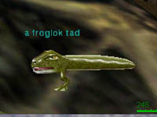
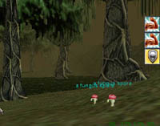

えー、皆様コンバンハ。
「Norrath ふらり探索紀行」のお時間がやってまいりました。
ところで皆様、InnothuleSwampはご存知ですか？ え？ （２秒）
ああ、そうですよねぇ。
今日は、この熱帯のカエルパラダイス
InnothuleSwampからの特集でお送りいたします。

うわ！ 見てくださいコレ。
まだ足が生えたばかりのおたまじゃくしですね〜。
非常にかわいらしいです。目付きが悪くて。
つい、倒してしまいました。

こちらはどうでしょう。並んで歩くかわいらしいミニきのこです。
後ろの木と大きさを比べてみてください。

スクリーンショットを撮ろうと座ったら、
すかさず襲いかかってきたのでプチッと潰してしまいました。
金しか持ってませんでした。

こちら、水につかった巨大きのこです。
ミニきのこの復讐に来るかと思いきや、
こちらの強さに恐れをなしています。
かわいそうなので、倒しました。
さて、今回の旅はいかがでしたでしょうか。
Norrathふらり惨殺紀行のお時間でした。
それでは、来週はあなたの街にお伺いします。お楽しみに！
モデル：InnnothuleSwampの住人たち 撮影：せれ